<!doctype html>
<html lang="en" class="h-full">
 <head>
  <meta charset="UTF-8">
  <meta name="viewport" content="width=device-width, initial-scale=1.0">
  <title>Computer Networks</title>
  <link rel="icon" type="image/png" href="LogoHAB-removebg-preview.png">
  <script src="https://cdn.tailwindcss.com/3.4.17"></script>
  <script src="https://cdn.jsdelivr.net/npm/lucide@0.263.0/dist/umd/lucide.min.js"></script>
  <script src="/_sdk/element_sdk.js"></script>
  <link href="https://fonts.googleapis.com/css2?family=JetBrains+Mono:wght@400;700&family=Source+Sans+3:wght@400;600;700&display=swap" rel="stylesheet">
  <style>
    html, body { height: 100%; margin: 0; }
    body { font-family: 'Source Sans 3', sans-serif; box-sizing: border-box; }
    code, .mono { font-family: 'JetBrains Mono', monospace; }
    .sidebar-item { transition: all 0.15s; }
    .sidebar-item:hover { background: #2d3748; }
    .sidebar-item.active { background: #1a73e8; color: #fff; }
    .code-block { 
      background: #1e1e2e; 
      color: #cdd6f4; 
      border-radius: 8px; 
      padding: 16px; 
      overflow-x: auto; 
      white-space: pre; 
      font-size: 0.85rem; 
      line-height: 1.6; 
      margin: 1rem 0;
      tab-size: 2;
    }
    .code-block .keyword { color: #cba6f7; }
    .code-block .string { color: #a6e3a1; }
    .code-block .comment { color: #6c7086; font-style: italic; }
    .code-block .type { color: #89b4fa; }
    .network-diagram { background: #1f2937; border: 1px solid #4b5563; border-radius: 8px; padding: 16px; font-family: monospace; font-size: 12px; }
  </style>
  <script src="/_sdk/data_sdk.js" type="text/javascript"></script>
 </head>
 <body class="h-full bg-gray-900 text-gray-100">
  <div class="flex h-full w-full">
   <!-- Sidebar -->
   <aside id="sidebar" class="w-64 min-w-[256px] bg-gray-800 border-r border-gray-700 overflow-y-auto flex-shrink-0 hidden md:block">
    <div class="p-5 border-b border-gray-700">
       <div class="flex items-center gap-3 mb-3">
          <button onclick="goHome()" class="hover:bg-gray-700 p-1.5 rounded transition" title="Go Home">
            <i data-lucide="home" class="w-5 h-5"></i>
          </button>
          <h1 id="site-title" class="text-lg font-bold text-emerald-400 mono flex-1">Computer Networks</h1>
        </div>
    </div>
    <nav class="py-2" id="nav-list"></nav>
   </aside>
   <!-- Mobile menu button --> 
   <button id="mobile-menu-btn" class="md:hidden fixed top-3 left-3 z-50 bg-gray-800 p-2 rounded-lg border border-gray-700 hover:bg-gray-700 transition"> 
    <i data-lucide="menu" class="w-5 h-5"></i> 
   </button> 
   <!-- Mobile overlay -->
   <div id="mobile-overlay" class="hidden fixed inset-0 bg-black/60 z-40 md:hidden" onclick="toggleMobile()"></div>
   <aside id="mobile-sidebar" class="hidden fixed left-0 top-0 h-full w-64 bg-gray-800 z-50 overflow-y-auto md:hidden shadow-2xl">
    <div class="p-5 border-b border-gray-700 flex justify-between items-center">
     <div class="flex items-center gap-3">
       <button onclick="goHome()" class="hover:bg-gray-700 p-1.5 rounded transition" title="Go Home">
         <i data-lucide="home" class="w-5 h-5"></i>
       </button>
       <h1 class="text-lg font-bold text-emerald-400 mono">Networks</h1>
     </div>
     <button onclick="toggleMobile()" class="hover:bg-gray-700 p-1.5 rounded transition">
      <i data-lucide="x" class="w-5 h-5"></i>
     </button>
    </div>
    <nav class="py-2" id="mobile-nav-list"></nav>
   </aside>
   <!-- Main Content -->
   <main class="flex-1 overflow-y-auto p-6 md:p-10" id="main-content"></main>
  </div>
  <script>
    const lessons = [
      // 🟡 BEGINNER
      {
        title: "🟡 What is Internet?",
        content: `
          <h2>What is the Internet?</h2>
<p>The <strong>Internet</strong> is a giant network that connects millions of computers, phones, tablets, smart TVs, and other devices all around the world.</p>          
          <h3>Key Facts</h3>
          <ul>
            <li><strong>~5 billion users</strong> (2024)</li>
            <li><strong>~1.4 billion websites</strong></li>
            <li>Created in <strong>1969</strong> (ARPANET)</li>
            <li>Backbone: <strong>fiber optic cables</strong> under oceans</li>
          </ul>

          
          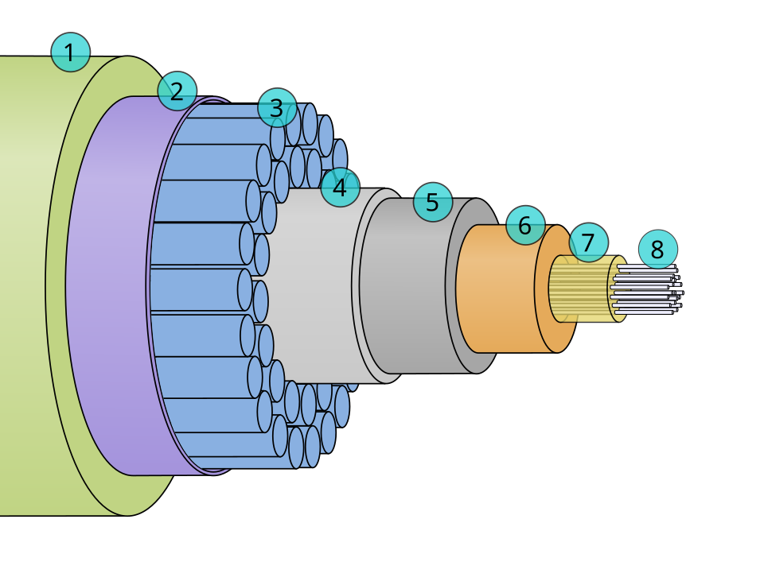
          <p><strong>📷 Image Source: </strong> Submarine cable cross-section (3D illustration)
Source: Wikimedia Commons</p>
         <p> A cross section of the shore-end of a modern submarine communications cable.<br>
1   – Polyethylene<br>
2   – Mylar tape<br>
3   – Stranded steel wires<br>
4   – Aluminium water barrier<br>
5   – Polycarbonate<br>
6   – Copper or aluminium tube<br>
7   – Petroleum jelly<br>
8   – Optical fibers</p>

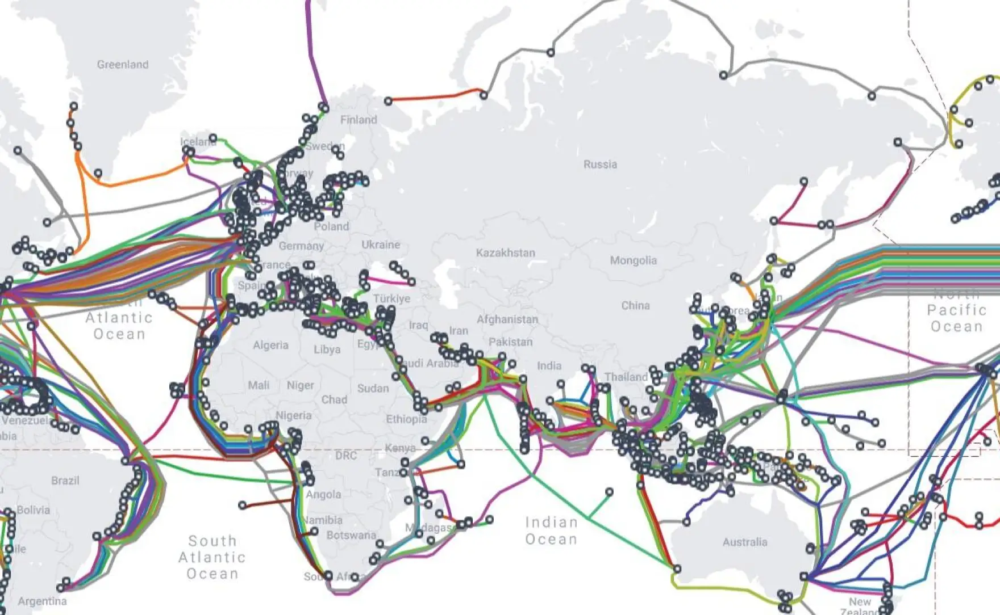
<p><strong>📷 Image Source: </strong> TeleGeography – Submarine Cable Map<br>
Licensed under CC BY-SA 4.0</p>
<a href="https://www.submarinecablemap.com/" class="text-green-300 
            hover:text-teal-400
            transition">You can visit the link</a>

<p>Offshore cable installation equipment</p>

<p><strong>📷 Image Source: </strong>  Cable Installation – 52989798437, via Wikimedia Commons
License: CC BY-SA 2.0 (BOEM)</p>
<h2>🌊 How Internet Travels Under the Ocean</h2>

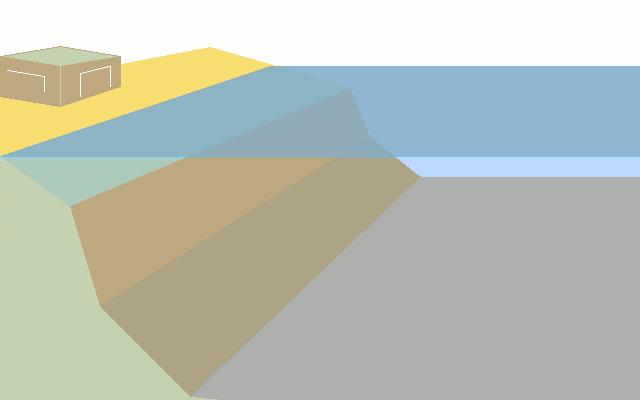
    <p><strong>📷 Image Source: </strong> Undersea cable laying.gif<br>
Created by Michel Barbetorte<br>
Corrections by Serge Delestaing and Atelier Graphique<br>
Source: Wikimedia Commons</p>
`},
{
 title: "🟡 Parts of the Internet",
        content: `
<h2>Main Parts of the Internet</h2>
<h3>1. Devices 📱💻</h3>
<p>Devices are things people use to connect to the Internet.<br>
  Examples:</p>
<ul>
<li>Computers</li>
<li>Phones</li>
<li>Tablets</li>
<li>Smart TVs</li>
</ul>
<p>These devices can send and receive information.</p>

<p><strong>📷 Image Source: </strong> by Jeremy Bishop on Unsplash</p>
<h3>2. Routers 📡</h3>

<p>A router is a small machine that helps connect devices to the Internet. <br>

It acts like a traffic controller.<br>

Example:</p>
<ul><li>
Your home Wi-Fi router connects your phone and laptop to the Internet.</li></ul>

<p><strong>📷 Image Source: </strong>  The Verge. (n.d.). [Wireless routers illustration] [Digital image]. theverge.com</p>
<h3>3. ISP (Internet Service Provider) 🌐</h3>
<p>An ISP is a company that provides Internet access.<br>

Examples:</p>
<ul>
<li>MPT </li>
<li>ATOM </li>
<li>Ooredoo Myanmar </li>
</ul>
<p>Job: <br>

Connects your home or phone to the Internet. <br>

Think of an ISP as: <br>

The company that gives you access to the Internet highway.</p>
<div style="display: flex;">
    
    
        
</div>
<p><strong>📷 Image Source: </strong><br>
- MPT logo © MPT Myanmar (mpt.com.mm)<br>
- ATOM logo © ATOM Myanmar (atom.com.mm)<br>
- Ooredoo Myanmar logo © Ooredoo Myanmar (ooredoo.com.mm)</p>
<h3>4. Internet Backbone 🌍</h3>

<p>The Internet Backbone is the worldwide network of:</p>
<ul>
<li>Fiber optic cables</li>
<li>Undersea cables</li>
<li>High-speed routers</li>
</ul><p>Job: Carry data between cities, countries, and continents.</p>

<p><strong>📷 Image Source: </strong> TeleGeography – Submarine Cable Map<br>
Licensed under CC BY-SA 4.0</p>
<a href="https://www.submarinecablemap.com/" class="text-green-300 
            hover:text-teal-400
            transition">You can visit the link</a>

<h3>5. Servers 🖥️</h3>
<p>Servers are powerful computers that store:</p>
<ul>
<li>Websites</li>
<li>Videos</li>
<li>Games</li>
<li>Files</li>
</ul>
<p>Job: Send information when users request it.</p>

        `
      },{ title: "🟡 How It Works?",
        content: `<h2>How It Works (Simplified)</h2>
          <div class="network-diagram">
          Your Phone → WiFi Router → ISP → Internet Backbone → Server → Response
          </div>
          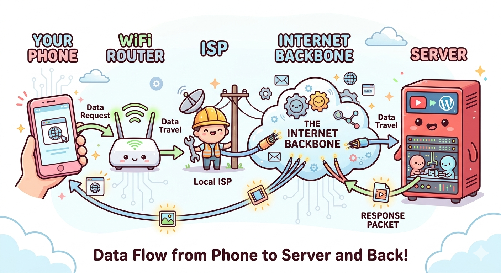
          <h3>1. 📱 Your Phone (The Request)</h3>
<p>It all starts with you! When you tap on a video, your phone bundles your request into a tiny digital package called a Data Request.</p>
 <div class="network-diagram">
What it says: "Hey, please send me the cat video!"</div>
<h3>2. 🔌 WiFi Router (The Local Gatekeeper)</h3>
<p>Your phone beams this request through the air using radio waves to your home WiFi Router.</p>
<div class="network-diagram">
Its job: It acts as the bridge between your wireless devices and the physical wires of the internet. It takes your wireless signal and converts it into electrical or light signals to travel down the cables.</div>
<h3>3. 👷 ISP - Internet Service Provider (The Neighborhood Highway)</h3>
<p>From your router, the data travels down the street to your Local ISP (companies like Comcast, Spectrum, AT&T, or Vodafone).</p>

<div class="network-diagram">Its job: Think of the ISP as the local traffic controllers. They manage the physical cables (fiber-optic or copper) in your town and direct your data toward the main internet highway.</div>
<h3>4. ☁️ The Internet Backbone (The Super Highway)</h3>
<p>This is where things get serious! Your ISP plugs into the Internet Backbone.</p>

<div class="network-diagram">What it is: A massive, global network of ultra-fast fiber-optic cables—many of which run deep underwater across oceans!
<br>
Its job: It shoots your data request across countries and continents at nearly the speed of light using gigantic high-speed routers and switches.</div>

<h3>5. 🐹 The Server (The Digital Warehouse)</h3>
<p>Your request successfully arrives at its destination: the Server (like the YouTube server).</p>

<div class="network-diagram">Its job: The server opens your request, understands what you want, and finds the exact video file in its massive library.</div>

<h3>6. 📦 The Response (The Return Trip!)</h3>
<p>The server bundles the video file into little packages called Response Packets.</p>

<div class="network-diagram">The trip back: The server shoots these packets all the way back through the Internet Backbone, through your ISP, into your Router, and finally right onto your screen.</div>

<div class="m-2 p-3 bg-yellow-200 text-black">⚡ Fun Fact: Even though this journey covers thousands of miles and passes through five different stages, the whole process usually takes less than a second!</div>
          <h3>Internet vs Web</h3>
          <table>
            <thead><tr><th>Internet</th><th>World Wide Web (WWW)</th></tr></thead>
            <tbody>
              <tr><td>Global network infrastructure</td><td>Service running ON the Internet</td></tr>
              <tr><td>Email, streaming, games, etc.</td><td>HTTP/HTTPS websites only</td></tr>
              <tr><td>Physical cables + protocols</td><td>Browsers + HTML/CSS/JS</td></tr>
            </tbody>
          </table>`
      },
      {  title: "🟡 What is Server?",
        content: `<h2>What Is a Server?</h2>
     <p>A server is a computer that provides a service to other computers (called clients).<br>

Think of a server as:<br>

A computer that waits for requests and sends back information or services.</p>
<h3>YouTube Server 🖥️ ▶️ </h3>

<p>A YouTube server stores and sends videos.</p>
<h4>What it does</h4>
<div class="code-block">Your Phone
    ↓ Request Video
YouTube Server
    ↓ Sends Video
Your Phone
</div>
<p>When you click a video or search the video: <br>

1.Your device asks for the video.<br>
2.The YouTube server finds it.<br>
3.The server sends the video data to your device.<br>

<strong>Main job:</strong> Store and stream videos.</p>
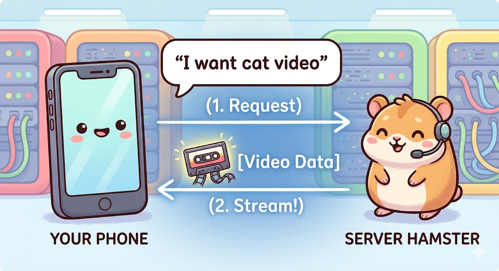

     `
      },{
        title:"🟡 World Wide Web (WWW)",
       content: `<h2>What is a World Wide Web (WWW)?</h2>
      <h3> 🌐 The World Wide Web (The Library)</h3>
<p>The World Wide Web (WWW) is like a massive, magical digital library that spans the entire world. It is the system that connects billions of documents and files together so people can look at them using the internet.</p>
       <h3> 🏢 What is a Website? (The Book) </h3>
<p>If the World Wide Web is a giant library, a Website is a single book inside that library.</p>
<div class="network-diagram">
<strong>Definition:</strong> A website is a collection of related digital pages that are all grouped together under one specific name (called a web address or URL, like www.youtube.com).
<br>
<strong>The "Cover":</strong> Just like a book has a front cover, a website has a Homepage. This is the first thing you see when you open it.
<br>
<strong>Examples:</strong> YouTube, Wikipedia, and Google are all different "books" (websites) in the web library.</div>
<h3>📄 What is a Web Page? (The Page)</h3>
<p>If a website is a book, a Web Page is a single page inside that book.</p>
<div class="network-diagram">
<strong>Definition:</strong> A web page is a single digital document that you can see on your screen.
<br>
<strong>What's on it?</strong> A single web page can contain text, colorful images, buttons, and videos.
<br>
<strong>How they connect:</strong> Just like turning the pages of a book, you click on Hyperlinks (links) to jump from one web page to another web page inside the website!</div>

<h3>Summary Table</h3>
<table>
  <tr><th>Concept </th> <th>Library Analogy </th> <th>Simple Definition</th></tr>
  <tr><td>World Wide Web</td>	<td>🏛️ The Library</td><td>The whole system where all digital files are kept.</td></tr>
  <tr><td>Website</td><td>	📘 The Book	</td><td>A collection of pages grouped under one name.</td></tr>
  <tr><td>Web Page</td><td>	📄 A Single Page</td><td>	One single screen of information inside a website.</td></tr>
  </table>
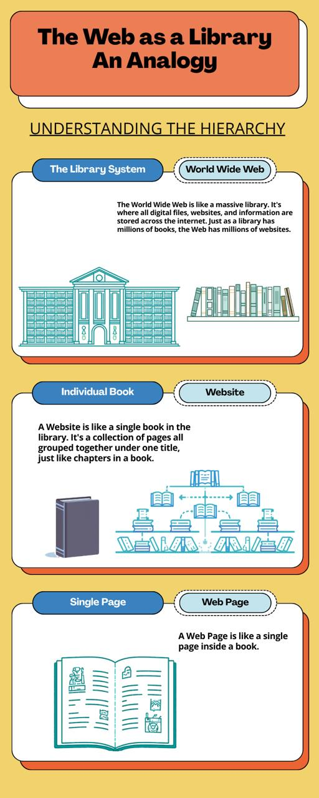
`
      },
      {
        title:"🟡 Browser & Search Engine",
         content: `<h2>Browser</h2>
        <h3> 🚗 1. Web Browser (The Vehicle)</h3>
<p>A Web Browser is the software app on your device that lets you visit and open websites. Without a browser, you cannot access the internet.</p>
<ul>        
<li><strong>Its Job:</strong> It takes all the messy code from a website and turns it into beautiful pictures, text, and videos that you can actually see and interact with.</li>

<li><strong>The Analogy:</strong> It is like your car. It physically takes you to the place you want to go.</li>

<li><strong>How you use it:</strong> You open it and type a specific web address into the top bar (like www.wikipedia.org).</li>

<li><strong>Popular Examples: </strong>
  <ul>
   
<li> 🌐 Google Chrome </li>

<li>🧭 Apple Safari </li>

<li>🦊 Mozilla Firefox </li>

<li>🌀 Microsoft Edge </li>
    </ul></li>
</ul>
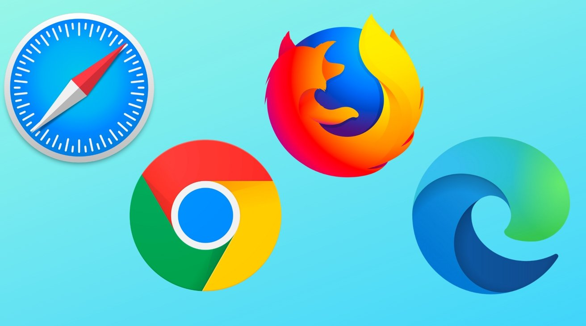

<h3>🗺️ 2. Search Engine (The Map)</h3>
<p>A Search Engine is a special website inside the browser that helps you find other websites when you don’t know their exact addresses.</p>
<ul>
<li><strong>Its Job:</strong> It searches the entire World Wide Web to find the exact pages, images, or videos you are looking for based on keywords you type.</li>

<li><strong>The Analogy:</strong> It is like a GPS or a Map. If you don't know where the toy store is, you use the map to find it. But the map cannot drive you there by itself—you still need the car (browser) to open the map!</li>

<li><strong>How you use it:</strong> You type a question or a topic into the search bar (like "cute puppy videos").</li>

<li><strong>Popular Examples:</strong>
<ul><li>
🔍 Google</li>
<li>
🦆 DuckDuckGo</li>
<li>
🪵 Bing</li>
<li>
🔴 Yahoo</li></ul>
</ul>
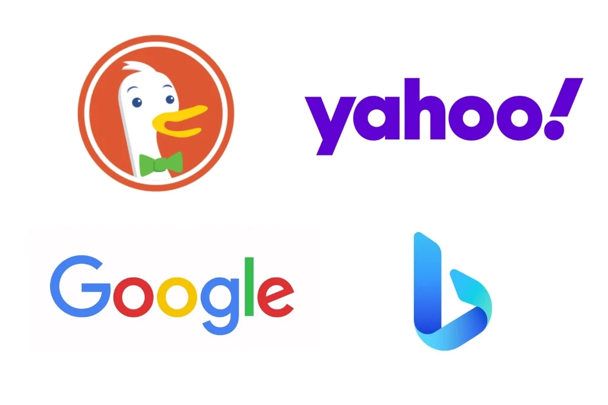
<p><strong>📷 Image Source: </strong><br>
    Google Chrome & Google © Google LLC<br>
Apple Safari © Apple Inc.<br>
Mozilla Firefox © Mozilla Foundation / Mozilla Corporation<br>
Microsoft Edge & Bing © Microsoft Corporation<br>
DuckDuckGo © DuckDuckGo, Inc.<br>
Yahoo © Yahoo Inc.</p>
`
      },
      {
        title: "🟡 What is Network?",
        content: `<h2>What is a Network?</h2>
          <p>A <strong>network</strong> is a group of computers/devices connected to share resources and information.</p>
          <h3>Network Types by Size</h3>
          <table>
            <thead><tr><th>Type</th><th>Range</th><th>Example</th></tr></thead>
            <tbody>
              <tr><td><strong>PAN</strong></td><td>~10m</td><td>Bluetooth headphones</td></tr>
              <tr><td><strong>LAN</strong></td><td>~100m</td><td>Home/School WiFi</td></tr>
              <tr><td><strong>WAN</strong></td><td>Kilometers+</td><td>Internet</td></tr>
              <tr><td><strong>MAN</strong></td><td>City-wide</td><td>City fiber network</td></tr>
            </tbody>
          </table>
          <h3>Network Components</h3>
          <ul>
            <li><strong>Devices:</strong> Computers, phones, IoT</li>
            <li><strong>Media:</strong> Cables (Ethernet), Wireless (WiFi)</li>
            <li><strong>Protocols:</strong> TCP/IP, HTTP</li>
            <li><strong>Hardware:</strong> Routers, switches, modems</li>
          </ul>
          <h3>PAN (Personal Area Network)</h3>
          <ul>
<li>Range ~10 m</li>
<li>Connects devices around one person.</li>
<li>Bluetooth headphones 🎧</li></ul>

<h3>LAN (Local Area Network)</h3>
  <ul>
<li>Range ~100 m</li>
<li>Connects devices in one home, school, or office.</li>
<li>Home/School Wi-Fi 🏠</li></ul>
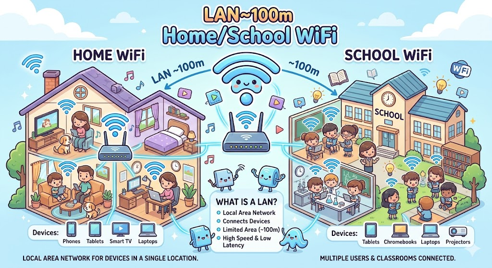
<h3>MAN (Metropolitan Area Network)</h3>
<ul>
  <li>Range ~City-wide</li>
<li>Connects networks across a city.</li>
<li>City fiber network 🌆</li>
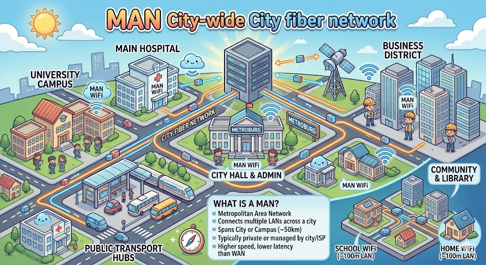
</ul>
<h3>WAN (Wide Area Network)</h3>
<ul>
<li>Range ~Kilometers+</li>
<li>Connects networks over large distances, even worldwide.</li>
<li>Internet 🌍</li>
</ul>
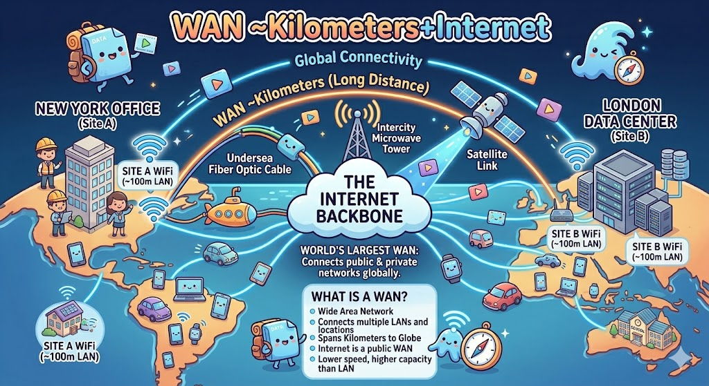
      
        `
      },
      {
        title: "🟡 WiFi vs Mobile Data",
        content: `
          <h2>WiFi vs Mobile Data</h2>
          <p>Two ways to connect to Internet. WiFi uses local wireless, Mobile Data uses cellular towers.</p>
         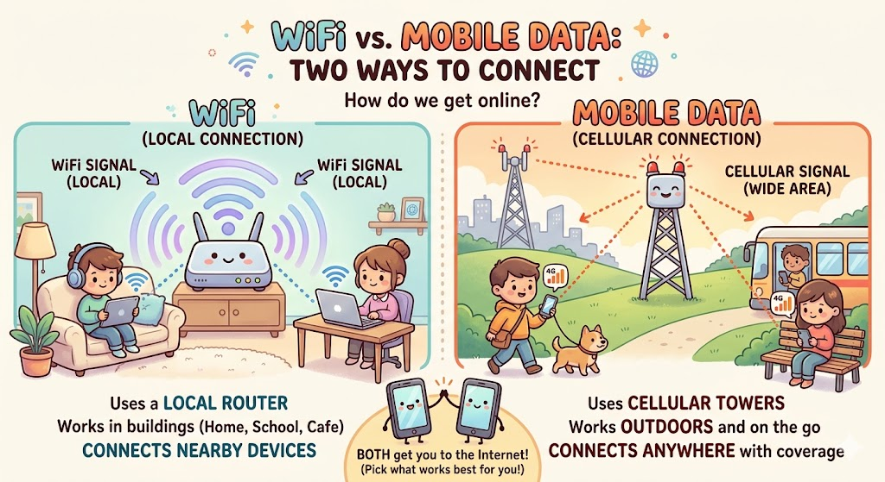
          <h3>Comparison</h3>
          <table>
            <thead><tr><th>Feature</th><th>WiFi</th><th>Mobile Data</th></tr></thead>
            <tbody>
              <tr><td><strong>Range</strong></td><td>20-100m (router)</td><td>Kilometers (towers)</td></tr>
              <tr><td><strong>Speed</strong></td><td>100Mbps-10Gbps</td><td>5-1000Mbps (5G)</td></tr>
              <tr><td><strong>Cost</strong></td><td>$30-100/month (home)</td><td>$/GB usage</td></tr>
              <tr><td><strong>Mobility</strong></td><td>Fixed location</td><td>Anywhere with signal</td></tr>
              <tr><td><strong>Security</strong></td><td>WPA3 (good)</td><td>Cellular encryption</td></tr>
            </tbody>
          </table>
          <h3>WiFi</h3>
          <ul>
            <li>2.4GHz (long range, crowded) / 5GHz (fast, short range)</li>
            <li>Channels: 1-13 (avoid overlap)</li>
            <li>Standards: WiFi 4(n), 5(ac), 6(ax)</li>
          </ul>
          <h3>Mobile Data</h3>
          <table>
            <thead><tr><th>Generation</th><th>Speed</th><th>Year</th></tr></thead>
            <tbody>
              <tr><td>3G</td><td>~2Mbps</td><td>2001</td></tr>
              <tr><td>4G LTE</td><td>~100Mbps</td><td>2009</td></tr>
              <tr><td>5G</td><td>~1Gbps+</td><td>2019</td></tr>
            </tbody>
          </table>

          <h3>Mobile Data 📱</h3>
          <div class="code-block">Phone
  ↓
Cell Tower
  ↓
Mobile ISP Network
  ↓
Internet</div>
          <h3>Wi-Fi 🏠</h3>
           <div class="code-block">Phone
  ↓ Wi-Fi
Router
  ↓
ISP
  ↓
Internet</div>
        `
      },

      // 🔵 INTERMEDIATE
      {
        title: "🔵 IP Address",
        content: `
          <h2>IP Address</h2>
          <p><strong>IP Address</strong> = Unique numerical label for every device on a network (like home address).</p>
          <h3>IPv4 vs IPv6</h3>
          <p>IPv4 = Older version of IP addresses. <br>
IPv6 = Newer version with many more addresses available.</p>
          <table>
            <thead><tr><th>Version</th><th>Format</th><th>Total Addresses</th><th>Status</th></tr></thead>
            <tbody>
              <tr><td>IPv4</td><td>192.168.1.1</td><td>~4.3 billion</td><td>Exhausted (NAT used)</td></tr>
              <tr><td>IPv6</td><td>2001:0db8::1</td><td>340 undecillion</td><td>Future standard</td></tr>
            </tbody>
          </table>
          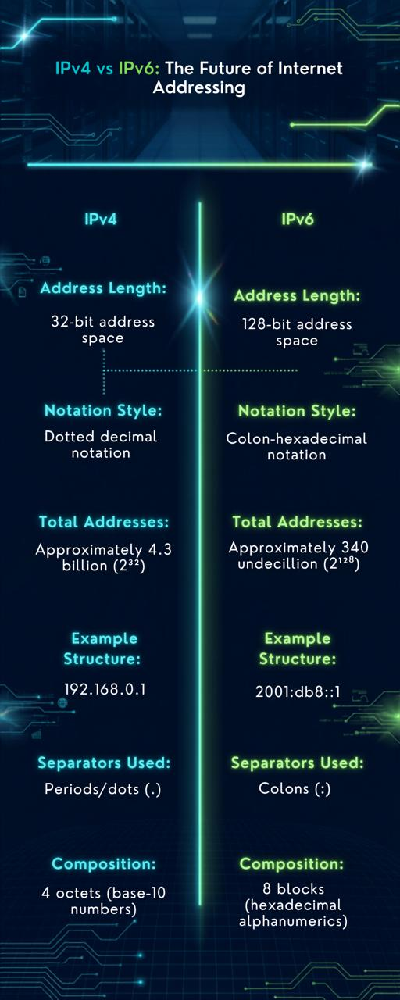
          <h3>Types of IP Addresses</h3>
          <table>
            <thead><tr><th>Type</th><th>Example</th><th>Purpose</th></tr></thead>
            <tbody>
              <tr><td><strong>Public</strong></td><td>8.8.8.8</td><td>Internet routable</td></tr>
              <tr><td><strong>Private</strong></td><td>192.168.x.x</td><td>Local networks</td></tr>
              <tr><td><strong>Static</strong></td><td>Fixed address</td><td>Always stays the same</td></tr>
              <tr><td><strong>Dynamic</strong></td><td>Assigned automatically</td><td>DHCP assigned/Can change over time</td></tr>
            </tbody>
          </table> <div class="bg-gray-800 m-10 p-10">
            <h2>Imagine You Live in an Apartment Building 🏢</h2>
            <p>There are 100 apartments in one building.</p>
            <div class="code-block">🏢 Sunshine Apartment

Room 101
Room 102
Room 103
Room 104
...</div>
<p>The building also has one street address:</p>
<div class="code-block">25 Cherry Street
Yangon</div>
<p>Notice there are two kinds of addresses:</p>
<ul>
<li>The building address (25 Cherry Street)</li>
<li>The room numbers (101, 102, 103...)</li></ul>

<h2>Your Home Internet</h2>
<div class="code-block"> Suppose your house has:

💻 Laptop
📱 Phone
📺 Smart TV
🖨️ Printer</div>
<p>All of them connect to your Wi-Fi router.</p>
<div class="code-block">             Internet
                 │
                 │
         🌍 Public IP
          203.81.65.40
                 │
             Wi-Fi Router
        ┌────────┼────────┐
        │        │        │
     Laptop   Phone      TV
192.168.1.2     .3           .4    </div>
<p>The router is like the apartment.</p>

<div class="code-block">🏢 Big Building = Router
🚪 Small Rooms = Devices (Laptop, iPhone, TV, Printer)</div>

          <h2>1. Does every laptop have an IP?</h2>
          <h4>✅ YES.</h4>

<p>Your laptop always has an IP.</p>

<div class=code-block>IP Address
│
├── Public IP
│
└── Private IP</div> 

<p>Every device gets its own number.</p>

<h2>2. Then what is Public IP?</h2>
Look at this
<div class="code-block">Google
Facebook
YouTube
       │
       │
Internet
       │
203.81.65.40
       │
     Router
       │
Laptop
Phone
TV</div>
<p>Google doesn't know:</p>
<div class="code-block">Laptop
192.168.1.2</div>
<p>Google only sees</p>
<div class="code-block">Router
  203.81.65.40</div>
  <p>That is your Public IP.<br>

It belongs to your whole home, not just your laptop.<br>

Think of it like this:</p>
<div class="code-block">Your Home

25 Cherry Street</div>
<p>Everyone knows where your house is.</p>
<h2>3. Then what is Private IP?</h2>
<p>Inside your house,</p>
<div class="code-block">Laptop
→ 192.168.1.2

Phone
→ 192.168.1.3

TV
→ 192.168.1.4</div>
  <p>These numbers are only used inside your house.<br>

Like apartment room numbers.</p>
<h2>4. Why don't all devices use Public IP?</h2>
<p>Imagine your family has</p>
<div class="code-block">Dad's phone
Mom's phone
Your laptop
Brother's laptop
TV
Printer</div>

<p>That's 6 devices.<br>

If every device needed a public IP,<br>

your ISP would have to give you 6 public addresses.<br>

Instead,<br>

they give you one public IP.<br>

The router shares it with all your devices.<br>

This saves IP addresses.</p>
<h2>5. What is Static IP</h2>
<p>Suppose your house address is</p>
<div class="code-block">25 Cherry Street

Ten years later,

it's still

25 Cherry Street</div>
<p>It never changes.<br>
  📌 Permanent address<br>

That's a <strong>Static IP.</strong></p>
<p>Today</p>
<div class="code-block">203.81.65.40</div>
<p>Tomorrow</p>
<div class="code-block">203.81.65.40</div>
<p>Next month</p>
<div class="code-block">203.81.65.40</div>
<p>Next Year</p>
<div class="code-block">203.81.65.40</div>

Same number.
<h2>6.What is  Dynamic IP 🔄</h2>
<p>Moving house</p>
<p>On June</p>
<div class="code-block">10 Cherry Street</div>
<p>On September</p>
<div class="code-block">45 Apple Road</div>
<p>On April</p>
<div class="code-block">9 Orange Street</div>
<h4>Then you disconnect the Internet 🔌</h4>

<p>Maybe:</p>
<p>
You turn off your router <br>
Power goes out <br>
Your Internet connection drops</p>
<div class="code-block">Router OFF</div>
<h4>Later you reconnect 🔄</h4>

<p>You turn the router back on.<br>
<p>Your ISP checks:</p>

<strong>"Which IP address should I give this customer?"</strong>

<p>It may give:</p>

<p>New Public IP:</p>

<div class="code-block">203.81.72.15</div>

<p>Now your address changed.</p>

<p>Before:</p>

<div class="code-block">203.81.65.40</div>

<p>After reconnecting:</p>

<div class="code-block">203.81.72.15</div>

<p>That is a <strong>Dynamic IP.</strong></p>
</div>
         
           <table>
        <tr><th>Network Term</th><th>Real-Life Example</th></tr>
<tr><td>IP Address</td>	<td>House address</td></tr>
<tr><td>Public IP	</td>	<td>City address visible to everyone</td></tr>
<tr><td>Private IP	</td>	<td>Room number inside a building</td></tr>
<tr><td>Static IP	</td>	<td>Permanent address</td></tr>
<tr><td>Dynamic IP	</td>	<td>Temporary address </td></tr>
</table>
          <h3>Check Your IP</h3>
          <ul>
            <li>Windows: <code>ipconfig</code></li>
            <li>Mac/Linux: <code>ifconfig</code> or <code>ip addr</code></li>
            <li>Website: whatismyipaddress.com</li>
          </ul>
          <h3>Example Network</h3>
          <div class="network-diagram">
          Router: 192.168.1.1
          Phone: 192.168.1.100
          Laptop: 192.168.1.101
          (All share same network)
          </div>
        `
      }, // 🔵 INTERMEDIATE
      {
        title: "🔵 IP Address2",
        content: `<h2>Think of the Internet as a giant city 🌍</h2>
        <p>Every building has an address.</p>
        <div class="code-block">🏠 Your House
203.81.65.40

🏢 Google Data Center
142.250.190.78

🏢 Facebook Data Center
157.240.xxx.xxx

🏢 Amazon Server
54.xxx.xxx.xxx</div>

<h2>Can one website have many IP addresses?</h2>
<p>✅ Yes!</p>

<p>Google has thousands of servers around the world.</p>
<div class="code-block">Google

Server A (USA)
142.250.190.78

Server B (Singapore)
142.250.200.15

Server C (Japan)
172.217.xx.xx</div>
        `},
      {
        title: "🔵 DNS (Domain Name System)",
        content: `
          <h2>DNS - Domain Name System</h2>
          <p>DNS translates human-readable names (<code>google.com</code>) to IP addresses (<code>142.250.190.78</code>). Like a phonebook for the Internet.</p>
          <h2>1What is DNS?</h2>
<strong>DNS = Domain Name System</strong>

<p>Think of DNS as the Internet's phone book.</p>

<p>In real life <br>

Suppose you want to call your friend.<br>

You know:</p>
<div class="code-block">Alice</div>
<p>But the telephone network needs:</p>

<div class="code-block">+95 9 123 456 789</div>

<p>So your phone looks up Alice's phone number.</p>

<p>DNS does the same thing.<br>

Instead of:</p>
<div class="code-block">google.com</div>

<p>it finds:</p>

<div class="code-block">142.250.190.78</div>
<h2>Why do we need DNS?</h2>
<p>Humans like names:</p>

<div class="code-block">google.com
youtube.com
facebook.com</div>

<p>Computers like numbers:</p>

<div class="code-block">142.250.190.78
142.250.xxx.xxx
157.240.xxx.xxx</div>

<p>DNS translates the human-friendly name into an IP address.</p>
<h3>The Whole Process</h3>

<div class="code-block">You type

google.com
      │
      ▼
Laptop
      │
      ▼
DNS Server
"What is google.com's IP?"
      │
      ▼
142.250.190.78
      │
      ▼
Laptop
      │
      ▼
Google Server
      │
      ▼
Google Website appears</div>
        `
      },
      {
        title: "🔵 Browser & Server",
        content: `
          <h2>Browser ↔ Server Communication</h2>
          <p>Your browser sends <strong>requests</strong> to servers, which send back <strong>responses</strong> (web pages).</p>
          <h3>Request Flow</h3>
          <div class="network-diagram">
          1. Browser: GET /index.html HTTP/1.1
             Host: example.com
             
          2. Server: HTTP/1.1 200 OK
             Content-Type: text/html
             
          3. &lt;html&gt;&lt;h1&gt;Hello&lt;/h1&gt;&lt;/html&gt;
          </div>
          <h3>HTTP Status Codes</h3>
          <table>
            <thead><tr><th>Code</th><th>Meaning</th><th>Color</th></tr></thead>
            <tbody>
              <tr><td>200</td><td>OK</td><td>🟢</td></tr>
              <tr><td>301</td><td>Moved Permanently</td><td>🟡</td></tr>
              <tr><td>404</td><td>Not Found</td><td>🔴</td></tr>
              <tr><td>500</td><td>Server Error</td><td>🔴</td></tr>
            </tbody>
          </table>
          <h3>Client-Server Model</h3>
          <ul>
            <li><strong>Client</strong> (Browser): Requests resources</li>
            <li><strong>Server</strong>: Stores/serves web content</li>
            <li><strong>Stateless</strong>: Each request independent</li>
          </ul>
          <h3>Modern Flow</h3>
          <div class="network-diagram">
          Browser → DNS → CDN → Load Balancer → Web Server → Database
          </div>
        `
      },

      // 🔴 ADVANCED
      {
        title: "🔴 HTTP / HTTPS",
        content: `
          <h2>HTTP vs HTTPS</h2>
          <p><strong>HTTP</strong> = HyperText Transfer Protocol (unencrypted).<br>
          <strong>HTTPS</strong> = HTTP + SSL/TLS encryption (secure).</p>
          <h3>Differences</h3>
          <table>
            <thead><tr><th>Feature</th><th>HTTP</th><th>HTTPS</th></tr></thead>
            <tbody>
              <tr><td><strong>Port</strong></td><td>80</td><td>443</td></tr>
              <tr><td><strong>Encryption</strong></td><td>❌ None</td><td>✅ TLS 1.3</td></tr>
              <tr><td><strong>Security</strong></td><td>🔴 Unsafe</td><td>🟢 Secure</td></tr>
              <tr><td><strong>SEO</strong></td><td>Bad</td><td>Google prefers</td></tr>
              <tr><td><strong>Speed</strong></td><td>Faster (no encryption)</td><td>HTTP/2 + caching</td></tr>
            </tbody>
          </table>
          <h3>TLS/SSL Handshake</h3>
          <ol>
            <li>Client: "Hello" + supported ciphers</li>
            <li>Server: Certificate + "Hello"</li>
            <li>Client verifies certificate (CA)</li>
            <li>Both generate session keys</li>
            <li>Encrypted communication begins</li>
          </ol>
          <h3>Lock Icon</h3>
          <p>🔒 = HTTPS with valid certificate<br>
          ⚠️ = Mixed content or invalid cert</p>
        `
      },
      {
        title: "🔴 Cyber Safety Basics",
        content: `
          <h2>Cyber Safety Basics</h2>
          <p>Protect yourself from online threats. <strong>90% of attacks preventable with basic hygiene.</strong></p>
          <h3>Common Threats</h3>
          <table>
            <thead><tr><th>Threat</th><th>How it Works</th><th>Protection</th></tr></thead>
            <tbody>
              <tr><td>Phishing</td><td>Fake emails/websites</td><td>Check URL, no click suspicious links</td></tr>
              <tr><td>Malware</td><td>Virus/trojan/ransomware</td><td>Antivirus, don't download unknowns</td></tr>
              <tr><td>Password Attack</td><td>Brute force/dictionary</td><td>12+ chars, unique, 2FA</td></tr>
              <tr><td>DDoS</td><td>Flood servers</td><td>CDN protection (website owners)</td></tr>
            </tbody>
          </table>
          <h3>Safety Checklist</h3>
          <ul>
            <li>✅ HTTPS everywhere (🔒)</li>
            <li>✅ Strong, unique passwords + password manager</li>
            <li>✅ 2FA/MFA everywhere</li>
            <li>✅ Antivirus + firewall</li>
            <li>✅ Software updates</li>
            <li>✅ VPN on public WiFi</li>
            <li>✅ Don't share personal info</li>
          </ul>
          <h3>Red Flags</h3>
          <ul>
            <li>"Your account suspended!" emails</li>
            <li>"Click here to claim prize!"</li>
            <li>HTTP sites asking for login</li>
            <li>Too-good-to-be-true offers</li>
          </ul>
        `
      },
      {
        title: "🔴 Cloud Concept Intro",
        content: `
          <h2>Cloud Computing</h2>
          <p><strong>Cloud</strong> = Internet-based computing where services run on remote servers, not your device.</p>
          <h3>Cloud Service Models</h3>
          <table>
            <thead><tr><th>Model</th><th>Responsibility</th><th>Examples</th></tr></thead>
            <tbody>
              <tr><td><strong>IaaS</strong></td><td>OS+, Network+, Storage+</td><td>AWS EC2, Google Compute</td></tr>
              <tr><td><strong>PaaS</strong></td><td>App+, Data+</td><td>Heroku, Google App Engine</td></tr>
              <tr><td><strong>SaaS</strong></td><td>Everything</td><td>Gmail, Netflix, Google Docs</td></tr>
            </tbody>
          </table>
          <h3>Benefits</h3>
          <ul>
            <li><strong>Scalability</strong> — Add capacity instantly</li>
            <li><strong>Cost</strong> — Pay for what you use</li>
            <li><strong>Access</strong> — Anywhere, any device</li>
            <li><strong>Backup</strong> — Automatic, redundant</li>
          </ul>
          <h3>Major Providers</h3>
          <table>
            <thead><tr><th>Provider</th><th>Market Share</th><th>Strength</th></tr></thead>
            <tbody>
              <tr><td>AWS</td><td>32%</td><td>Everything</td></tr>
              <tr><td>Azure</td><td>21%</td><td>Enterprise</td></tr>
              <tr><td>Google Cloud</td><td>11%</td><td>AI/ML</td></tr>
            </tbody>
          </table>
          <h3>Examples You Use Daily</h3>
          <ul>
            <li>Netflix (streaming)</li>
            <li>Gmail (email)</li>
            <li>Google Drive (storage)</li>
            <li>Instagram (social)</li>
          </ul>
        `
      }
    ];

    let currentLesson = 0;

    function buildNav(container) {
      container.innerHTML = '';
      lessons.forEach((lesson, i) => {
        const item = document.createElement('div');
        item.className = `sidebar-item px-5 py-2.5 cursor-pointer text-sm text-gray-300 ${i === currentLesson ? 'active' : ''}`;
        item.textContent = lesson.title;
        item.onclick = () => { currentLesson = i; renderAll(); toggleMobile(false); };
        container.appendChild(item);
      });
    }

    function renderContent() {
      const main = document.getElementById('main-content');
      main.innerHTML = `
        <article class="max-w-3xl mx-auto lesson-content">
          ${lessons[currentLesson].content}
          <div class="flex justify-between mt-10 pt-6 border-t border-gray-700">
            ${currentLesson > 0 ? `<button onclick="nav(-1)" class="flex items-center gap-2 px-4 py-2 bg-gray-700 hover:bg-gray-600 rounded-lg text-sm"><i data-lucide="chevron-left" class="w-4 h-4"></i> Previous</button>` : '<span></span>'}
            ${currentLesson < lessons.length - 1 ? `<button onclick="nav(1)" class="flex items-center gap-2 px-4 py-2 bg-emerald-600 hover:bg-emerald-500 rounded-lg text-sm">Next <i data-lucide="chevron-right" class="w-4 h-4"></i></button>` : '<span></span>'}
          </div>
        </article>
        <style>
          .lesson-content h2 { font-size: 1.75rem; font-weight: 700; margin-bottom: 0.75rem; color: #6ee7b7; }
          .lesson-content h3 { font-size: 1.2rem; font-weight: 600; margin-top: 1.5rem; margin-bottom: 0.5rem; color: #a7f3d0; }
          .lesson-content p { margin-bottom: 1rem; line-height: 1.7; color: #d1d5db; }
          .lesson-content ul { list-style: disc; padding-left: 1.5rem; margin-bottom: 1rem; }
          .lesson-content li { margin-bottom: 0.4rem; color: #d1d5db; line-height: 1.6; }
          .lesson-content ol { padding-left: 1.5rem; margin-bottom: 1rem; }
          .lesson-content code { background: #374151; padding: 2px 6px; border-radius: 4px; font-size: 0.85em; color: #a5b4fc; }
          .lesson-content table { width: 100%; border-collapse: collapse; margin: 1rem 0; background: #1f2937; border-radius: 0.5rem; overflow: hidden; }
          .lesson-content th, .lesson-content td { border: 1px solid #4b5563; padding: 0.75rem 1rem; text-align: left; }
          .lesson-content th { background: #374151; font-weight: 600; }
          .network-diagram { background: linear-gradient(135deg, #1e293b 0%, #334155 100%); border: 1px solid #475569; border-radius: 8px; padding: 1.25rem; font-family: 'JetBrains Mono', monospace; font-size: 13px; color: #cbd5e1; margin: 1rem 0; }
        </style>
      `;
      lucide.createIcons();
    }

    function renderAll() {
      buildNav(document.getElementById('nav-list'));
      buildNav(document.getElementById('mobile-nav-list'));
      renderContent();
    }

    window.nav = function(dir) { 
      currentLesson += dir; 
      renderAll(); 
      document.getElementById('main-content').scrollTop = 0; 
    };

    window.goHome = function() { window.location.href = 'index.html'; };

    window.toggleMobile = function(force) {
      const sidebar = document.getElementById('mobile-sidebar');
      const overlay = document.getElementById('mobile-overlay');
      const show = force !== undefined ? force : !sidebar.classList.contains('hidden');
      sidebar.classList.toggle('hidden', !show);
      overlay.classList.toggle('hidden', !show);
    };

    document.addEventListener('DOMContentLoaded', function() {
      document.getElementById('mobile-menu-btn').onclick = () => toggleMobile();
      renderAll();
      lucide.createIcons();
    });

    const defaultConfig = { 
      site_title: 'Computer Networks', 
      primary_color: '#10b981', 
      surface_color: '#1f2937', 
      text_color: '#d1d5db', 
      accent_color: '#6ee7b7', 
      bg_color: '#111827', 
      font_family: 'Source Sans 3', 
      font_size: 16 
    };

    function applyConfig(config) {
      document.getElementById('site-title').textContent = config.site_title || defaultConfig.site_title;
    }

    if (window.elementSdk) {
      window.elementSdk.init({
        defaultConfig,
        onConfigChange: async (config) => applyConfig(config),
        mapToCapabilities: (config) => ({
          recolorables: [
            { get: () => config.bg_color || defaultConfig.bg_color, set: (v) => { config.bg_color = v; window.elementSdk.setConfig({ bg_color: v }); } },
            { get: () => config.surface_color || defaultConfig.surface_color, set: (v) => { config.surface_color = v; window.elementSdk.setConfig({ surface_color: v }); } },
            { get: () => config.text_color || defaultConfig.text_color, set: (v) => { config.text_color = v; window.elementSdk.setConfig({ text_color: v }); } },
            { get: () => config.primary_color || defaultConfig.primary_color, set: (v) => { config.primary_color = v; window.elementSdk.setConfig({ primary_color: v }); } },
            { get: () => config.accent_color || defaultConfig.accent_color, set: (v) => { config.accent_color = v; window.elementSdk.setConfig({ accent_color: v }); } }
          ],
          borderables: [],
          fontEditable: { get: () => config.font_family || defaultConfig.font_family, set: (v) => { config.font_family = v; window.elementSdk.setConfig({ font_family: v }); } },
          fontSizeable: { get: () => config.font_size || defaultConfig.font_size, set: (v) => { config.font_size = v; window.elementSdk.setConfig({ font_size: v }); } }
        }),
        mapToEditPanelValues: (config) => new Map([["site_title", config.site_title || defaultConfig.site_title]])
      });
    }
  </script>
 </body>
</html>